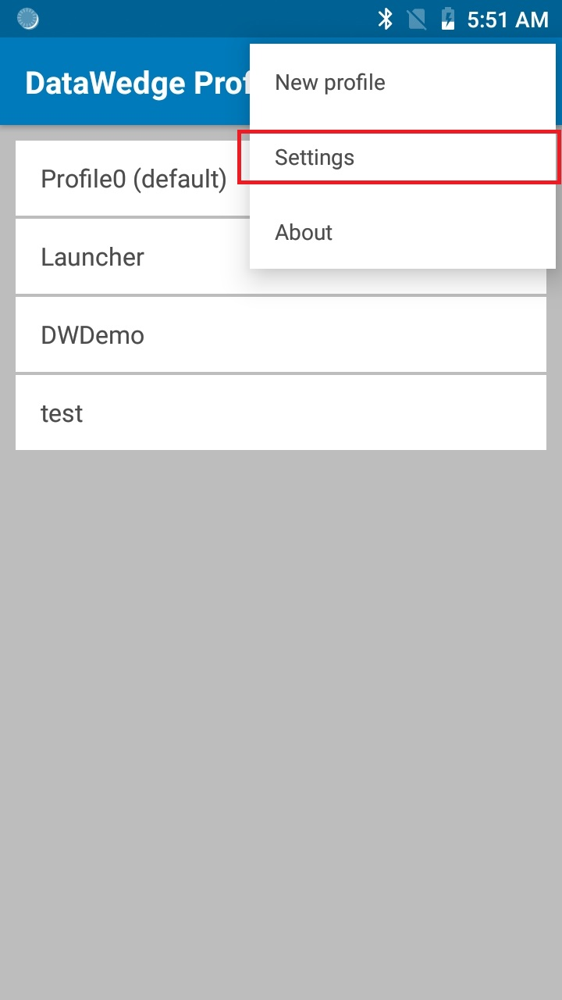
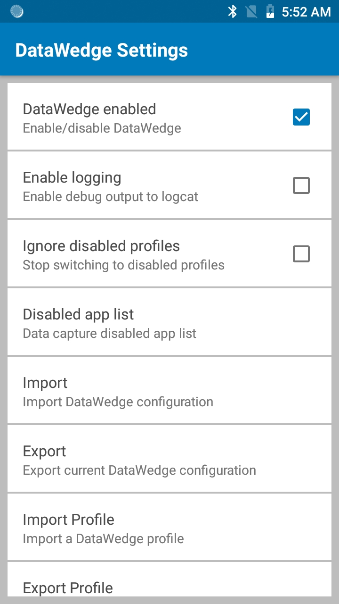
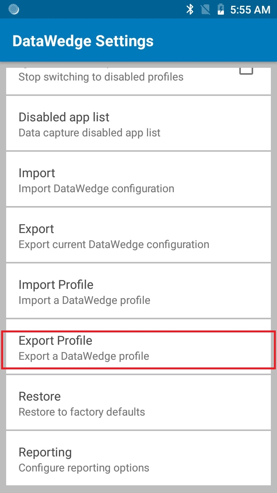
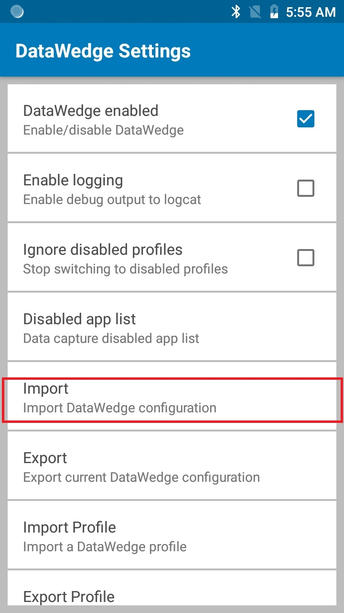
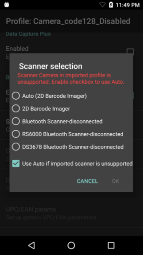
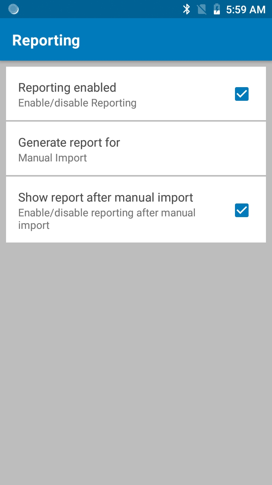
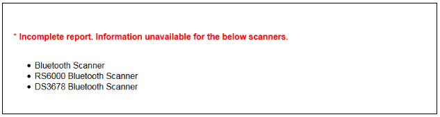

Overview
This guide covers settings for the DataWedge app, including enabling and disabling DataWedge on the device, import reporting, and the management of Profile and Configuration files for backup and mass-deployment. For information about creating and implementing Profiles and Plug-ins, see the Profile Guides.
DataWedge Settings
Most of the functionality referenced in this guide is accessed through the DataWedge Settings panel.
To access DataWedge Settings:
1. From the Profiles screen, tap the "hamburger" menu and select Settings as highlighted below. The DataWedge Settings panel appears similar to the image in Step 2.

Access the DataWedge Settings panel from the Profiles screen.
2. Tap the desired feature to invoke it or change its state.

The DataWedge Settings panel
Functions of the DataWedge Settings panel:
- DataWedge enabled - Controls the DataWedge service. Uncheck this box to disable DataWedge on the device and return control of scanning hardware to the system.
- Enable logging - Enables DataWedge to output logs for viewing with Logcat or in Android Studio or another compatible viewer.
- Ignore disabled profiles - Prevents DataWedge from switching to a Profile that is not enabled. In such instances, the Profile switch is ignored and the current Profile remains active Profile0 must be disabled to use this feature.
- Disabled app list - Disables scanning functions for selected apps and/or activities anywhere on the device. See more.
- Import - Invokes navigation for importing a DataWedge Config file from device storage, replacing the current DataWedge settings. See more.
- Export - Exports the current DataWedge configuration to device storage. See more.
- Import Profile - Invokes navigation for importing a DataWedge Profile from device storage. If a Profile of the same name already exists in DataWedge, settings of the existing Profile will be updated to match those of the imported file. See more.
- Export Profile - Exports an individual DataWedge profile to device storage. See more.
- Restore - Returns DataWedge on the device to factory default settings. See more.
Logging
DataWedge provides the option of outputting system log messages for viewing through the Logcat command line tool, Android Studio or another compatible viewer, usually over a USB connection.
To Enable/Disable Logging:
From the DataWedge Settings panel, tap Enable Logging to enable or disable logging as desired.

Ignore Disabled Profiles
This feature prevents DataWedge from switching to a disabled profile when the app calls SwitchToProfile API. For example, this can be useful in cases where there is a profile that keeps the scanner enabled - if Ignore Disabled Profiles is enabled, it prevents an activity or app from switching to another profile that intends to disable the scanner.
To enable this feature, Profile0 must be disabled.
From the DataWedge Settings panel, tap Ignore disabled profiles to enable or disable as desired:

Disable Apps
DataWedge can prohibit certain apps from accessing its data capture services. This can be useful as a security measure to ensure that acquired data is sent only to approved apps, or simply as a means of controlling which apps will have access to the scanner. By default, all apps have access.
To Disable Data Capture for an app:
From the DataWedge Settings panel, tap Disabled app list:

A list appears showing all installed apps and packages, similar to the image below. Tap one or more app(s) or activities to add to the disabled list, scrolling as necessary.

Notes:
- Apps/activities associated with a specific profile cannot be disabled.
- Disabled apps/activities cannot be associated with a profile.
- Disabling a parent package disables all of its activies.
- A disabled activity does not disable the parent or its other activities.
Disable DataWedge
Control of barcode scanning hardware is exclusive. When DataWedge is active, Scanner and Barcode APIs of apps such as Enterprise Browser and others will be inoperative. Likewise, when an app such as Enterprise Browser controls the scanning hardware, other apps (including DataWedge) are locked out. It is therefore important to understand how to take control of a device's scanner hardware and, if necessary, release it to other apps when scanning is complete.
To disable DataWedge:
1. Start DataWedge and navigate to the Profiles list (if not shown by default).
2. Tap on the "hamburger" menu and select -> Settings:
3. Uncheck the "DataWedge enabled" checkbox. Control of scanner hardware is returned to the system.

To learn how to access DataWedge programmatically, see the DataWedge APIs.
Deployment
Once DataWedge is set up and configured as desired on a device, settings can be saved to a file and distributed to other devices either manually or using a EMM (Enterprise Mobility Management) system. DataWedge 6.5 introduced improvements to the compatibility of exported Profiles. Profiles created with DataWedge 6.5 (or higher) will work on any Zebra device model running DataWedge 6.5 or higher. See Export a Profile for more information.
For other methods of deployment, using StageNow and EMM, see the Mass Deployment guide.
Export a Config
Once DataWedge is set up and configured as desired on a device, its settings file can be exported, distributed to other devices, imported and activated automatically (or imported manually, as above). This file contains Profiles, Plug-ins and all DataWedge settings, including its status (enabled/disabled), logging and other configurable parameters. This is particularly useful to export multiple profiles.
To Export a DataWedge Config file:
1. From the DataWedge Settings panel, tap Export as highlighted below.
A screen appears similar to the one in Step 2.
2. If more than one storage device exists, tap the desired storage device, then tap Export. Only the storage device may be selected; the path will be inserted automatically.

Notes:
- The DataWedge Config file is always named
datawedge.db. - The default path and filename of an exported configuration file is:
/storage/sdcard0/Android/data/com.symbol.datawedge/files/datawedge.db - If an external SD card is installed, an alternate path can be selected. For example:
/storage/sdcard1/Android/data/com.symbol.datawedge/files/datawedge.db
3. Retrieve the file datawedge.db from the device and distribute to other devices manually or through a Mobile Device Management (MDM) system.
Export a Profile
Once a DataWedge Profile is set up and configured as desired on a device, it can be exported and distributed for use on other devices throughout an enterprise. This enables a company to fine-tune settings for the acquisition, manipulation and disposition of data for specific applications(s), and easily propagate those settings to others in the organization.
Notes:
- If more than one Profile is to be created, exported and distributed at the same time, it might be beneficial to create and export the Profiles together as a single DataWedge Configuration file using Export a Config.
- If a Profile exists on the device with the same name as one being imported, the existing profile will be overwritten by the imported one.
- Profiles created with DataWedge 6.5 (or higher) will work on any Zebra device model running DataWedge 6.5 or higher. See Cross-Device Import for more info.
To Export a Profile:
1. From the DataWedge Settings panel, tap Export Profile as highlighted below. A list of Profiles on the device appears similar to the image in Step 2.

2. If more than one storage device exists, tap the desired storage device, then the name of the Profile to be exported, then tap Export. Only the storage device and Profile may be selected; the path will be inserted automatically.
The default path and filename of an exported Profile is:
/storage/sdcard0/Android/data/com.symbol.datawedge/files/dwprofile_profilename.db
If an external SD card is installed, an alternate path can be selected:
/storage/sdcard1/Android/data/com.symbol.datawedge/files/dwprofile_profilename.db
3. Retrieve the exported file from the device and distribute to other devices manually or through a Mobile Device Management (MDM) system.
DO NOT RENAME THE EXPORTED FILE or MANUALLY EDIT THE DATABASE FILE CONTENTS. Doing so will result in errors and import failure.
Profiles created with DataWedge 6.5 (or higher) will work on any Zebra device model running DataWedge 6.5 or higher.
Import a Config
DataWedge can accept settings created on another device and distributed throughout an enterprise by importing a DataWedge Configuration file. This file contains Profiles, Plug-ins and all DataWedge settings, including its status (enabled/disabled), logging and other configurable parameters. This is particularly useful to import multiple profiles.
Importing a Config file overwrites all DataWedge settings and Profiles previously stored on the device.
Note: DataWedge Profile (dwprofile_<profilename>.db) and Config (datawedge.db) files can only be imported from the following location due to Android's scoped storage restrictions:
/storage/<internal or external SD card>/Android/data/com.symbol.datawedge/files/
To Import a DataWedge Configuration file:
1. From the DataWedge Settings panel, tap Import. A screen appears similar to the one in Step 2, below.

2. Navigate to the imported file on device storage using the interface provided:
Imported settings take effect immediately and overwrite all prior settings.
The DataWedge Config file is always named datawedge.db.
See Cross-Device Import for more information.
Import a Profile
Importing a Profile enables settings created elsewhere to quickly be activated on a device. This enables organizations to develop and fine-tune Profiles in a test lab, for example, before exporting and deploying them to the field or across an enterprise. See Export a Profile for more information.
While the Profile importing process is similar to that of the Configuration file, the Profile itself is very different. A Profile is a single group of settings from an individual profile that control how DataWedge will behave with one or more specific applications and devices. A Config file can contain numerous Profiles as well as other DataWedge settings.
Notes:
On a device with an older DataWedge version (v8.1 or lower) which does not provide multiple scanner support, when a profile configured with multiple scanners is imported it results to any one of the scanners being selected.
DataWedge Profile (
dwprofile_<profilename>.db) and Config (datawedge.db) files can only be imported from the following location due to Android's scoped storage restrictions:/storage/<internal or external SD card>/Android/data/com.symbol.datawedge/files/
Importing a Config file overwrites all previous DataWedge settings and Profiles. Importing a Profile simply adds the imported Profile to the list of available Profiles on the device. If a Profile exists on the device with the same name as the one being imported, the existing Profile will be modified by the imported one.
Duplicate Associated Apps when importing profiles. If a duplicate Associated App exists between a current profile and a profile being imported, the profile being imported will not take into effect. For example, if current profile A is configured with an associated app and that same app is associated with profile B, when importing profile B the import does not take into effect due to the duplication.
This similarly applies if an app is listed in the Disabled App List and that same app is an Associated App in a profile being imported - the import does not take into effect and the app remains on the Disabled App List.
To Import a DataWedge Profile:
1. From the DataWedge Settings panel, tap Import Profile as highlighted below. A screen appears similar to the one in Step 2.

2. Navigate to the file being imported from device storage using the interface provided:
 Warning: If a Profile exists on the device with the same name as the one being imported, the existing Profile will be modified by the imported one.
Warning: If a Profile exists on the device with the same name as the one being imported, the existing Profile will be modified by the imported one.
DataWedge Profile naming convention: dwprofile_<profilename>.db.
Cross-device Import
Profiles and Config files exported from a device with DataWedge 6.5 (or higher) can be imported to other devices running DataWedge 6.5 (or higher), even if the source and destination devices contain different scanning and/or imaging peripherals. To accommodate hardware differences, DataWedge 6.5 (or higher) implements the following user-interface changes.
Peripheral Not Present, 'Use auto' selected
If the selected scanner in the original device is not supported in the destination device but "Use auto" is selected (as shown below), DataWedge applies the input settings (i.e. decoder parameters, etc.) as originally configured for the source scanning device to the automatically selected peripheral on the destination device.

|
"Use Auto" selected
Peripheral Not Present, 'Use auto' not selected
If a source Profile is configured for a scanner that's not supported by the destination device, a dialog similar to the image below will appear when selecting a scanner for the Profile. For example, the Zebra TC75 has a camera; the TC51 does not. If a Profile configured for a camera created on the TC75 was imported by the TC51, a message like the one below appears, prompting the user to select a peripheral for scanning. After selection, DataWedge applies the input settings (i.e. decoder parameters, etc.) as originally configured for the source scanning device to the manually selected peripheral on the destination device.

"Use auto" not selected
Conversion from DataWedge 6.4 (and lower)
DataWedge makes it possible to covert Config files and Profiles that reside on (or were made with) a device containing a version of DataWedge prior to 6.5 by upgrading the device to DataWedge 6.5 (or higher) and importing (if necessary) and then exporting the files. This applies to devices running KitKat only; devices running Marshmallow (and higher) already have DataWedge 6.5 (or higher).
IMPORTANT: The device that's being upgraded for the purpose of converting files must be the same model device as that which made the original files. For example, Profiles made with an older version of DataWedge on a TC70 must be imported into DataWedge 6.5 (or higher) running on a TC70.
Restore (defaults)
DataWedge has the ability to reset all user-configured settings, restoring them to their original factory defaults. Caution: This action cannot be undone.
This feature also can be executed using the Restore Config API.
To Restore DataWedge to its factory-default settings:
1. From the DataWedge Settings panel, tap Restore as highlighted below. A confirmation screen appears similar to the image in Step 2.
2. Tap Yes to Restore factory defaults (tap No to cancel).

Enterprise Folder
On Zebra devices, internal storage contains a directory named /enterprise that persists (is not erased) after an Enterprise reset is performed on the device. DataWedge stores its files in several directories below /enterprise, which allows them to persist after an Enterprise reset.
Directory Behavior:
/enterprise/device/settings/datawedge/enterprisereset/- DataWedge checks this folder following an Enterprise reset and imports a configuration file and/or any Profile(s) present./enterprise/device/settings/datawedge/autoimport- DataWedge monitors this folder whenever it's running and immediately imports and activates any configuration file placed here, overwriting prior settings. See Auto Import, below.
Notes:
- A DataWedge Restore operation will delete the working .db file.
- A Factory reset deletes all files in the
/enterprisefolder. - If a
datawedge.dbfile exists in the/enterpriseresetdirectory, DataWedge will activate it as the new working Config file.
Auto Import
DataWedge supports remote deployment of Config files (datawedge.db) and Profiles (dwprofile_profilename.db) to devices through commercially available third-party Mobile Device Management (MDM) systems. When DataWedge launches, it checks the /enterprise/device/settings/datawedge/autoimport directory for the presence of such files. If any are found, it executes the functions below.
DataWedge Auto-Import routine:
- Import the new file(s)
- Replace the existing Config file and like-named Profile(s) (if any)
- Delete the imported files
- Put new settings immediately into effect
While DataWedge is running, it receives a system notification whenever a Config file or Profile is placed in the /autoimport folder and executes the same four functions.
Important Notes:
- For the best experience, Zebra strongly recommends that users be advised to exit any DataWedge configuration UI screen before new Config files are remotely deployed.
- On devices running Android KitKat or later, the
/enterprisefolder cannot be seen with File Explorer or other user-level tools. Moving configuration files to and from the/autoimportor/enterpriseresetfolders must be done programmatically, or with a staging client app or MDM. - DataWedge versions prior to 6.9 attempt to consume any of the monitored “.db” files as soon the file name(s) appear in the
/autoimportfolder. Therefore, it is possible for DataWedge to attempt to consume a file before it is completely written. To avoid this condition, Zebra recommends initially storing the file with an alternate extension (i.e. ".tmp") and changing the extension to .db once writing is complete. - Zebra recommends applying explicit file permissions to the all .db files so that DataWedge will not be impeded from any of its file procedures.
Reporting (Deprecated)
DataWedge 6.6 (and higher) can report the results of the importation of device Profiles. These HTML reports display settings differences between the originating (source) database and the target (destination) device. This allows administrators to easily identify differences and make adjustments to compensate for disparities in hardware or software capabilities from one device to another. Reports always use the destination device as the basis against which to compare incoming settings files.
◦ Enumerate Scanners - generates an index of scanners available on the device.
◦ Get Config - retrieves the `PARAM_LIST` settings, or the supported parameters, from the specified Profile; returned as a set of value pairs or a Plug-in config bundle. See Get Supported Barcode Parameters for sample code.
Reporting added in DataWedge 6.6.

Functions of the Reporting panel:
- Reporting enabled - used to enable or disable report generation following import operations. Disabled by default. See Note below.
- Generate report for - allows reporting to be generated only for Manual import, only for Auto import, or for both.
- Show report after manual import - displays the generated report using the default browser on the device. Supported for Manual import only.
Note: If Reporting is disabled in DataWedge prior to importing a full database file in which reporting is enabled, Reporting is enabled in DataWedge following the operation.
The parameters of this feature can be configured using the Set Reporting Options API.
File Names and Locations
These file names are always the same:
datawedge.db- the (exported) DataWedge configuration database to be importeddw_report_for_full_config.html- report generated after importingdatawedge.db
These file names correspond with the Profile name:
dwprofile_<profile_name>.db- an individual (exported) Profile to be importeddw_report_for_profile_<profile_name>.html- report generated after importing Profiledwprofile_<profile_name>.db
Files are generally located in the following device directory:
/Android/data/com.symbol.datawedge/files
Report Parameters
The following parameter categories are currently supported in DataWedge reporting:
- DECODER
- DECODER_PARAMS
- READER_PARAMS
- SCAN_PARAMS
- UDI_PARAMS
- UPCEAN_PARAMS
Report Formats
Report information varies slightly when importing a full datawedge.db file and a profile-specific dwprofile_<profile_name>.db file. Importing either file type generates a summary like the one shown below, with the last two field displaying information specific to the file type.

Summary Elements, Full Database Import:
- DataWedge version - the version installed in the target device.
- Source DataWedge version - the version installed in the source device and used to generate the imported file.
- Current Device - model of the device that generated the report.
- Source Device - model of the device that created the imported database.
- Imported time - date and time of the import operation.
- Importing mode - indicates whether the import was manual or automatic.
- Configuration file - fully qualified path of the imported database file.
- DataWedge Enabled* - reports the status of DataWedge following import operation.
- DataWedge Logging* - reports the status of DataWedge logging following the import operation.
* This field varies for Profile database reports.
Summary Elements, Profile Database Import:
- DataWedge version - the version installed in the target device.
- Source DataWedge version - the version installed in the source device and used to generate the imported file.
- Current Device - model of the device that generated the report.
- Source Device - model of the device that created the imported database.
- Imported time - date and time of the import operation.
- Importing mode - indicates whether the import was manual or automatic.
- Configuration file - fully qualified path of the imported database file.
- Profile Name* - indicates the name of the imported profile.
- Profile Enabled* - reports the status of imported Profile following the import operation.
* This field varies for full database reports.
Profile Summary
Full database imports can include any number of individual Profiles. Reports for full database imports include a list of the imported Profiles like the one pictured below. Tap on a Profile name to display the report for that Profile. When importing an individual Profile, the Profile Summary contains a single entry.

Profile Report
A report generated for each imported Profile indicates the scanner currently selected for that Profile and whether the Plug-in is enabled and set to automatically select a different scanning device if the selected device is unsupported (see Cross-device Import for more information).

Impacted parameters - section lists parameters that contain different values in the source and destination databases. The example report above shows four such parameters, two for decoders and one each for reader and scan parameters.
Unchanged parameters - section lists parameters that contain values from the imported file that were changed from their default values but remain applicable in the destination device.
Note: Settings left in their default state in the source device are not reported unless they cannot be applied or have a different default value in the destination.
Scanner Params Summary
This section lists the scanners supported on the current device and the compatibility of each for all imported parameters. Following the summary, a section is presented for each supported scanner that lists unsupported parameters, changes in default settings of existing parameters and new parameters along with their settings.

Unsupported params - are parameters exported from the source device that are not recognized by the destination device.
Default changed params - are parameters supported in both devices but with differing default values.
New params - are parameters supported in the current device but not found or supported in the source device.
User Notices
A user notice appears when one or more of the imported settings has no corresponding setting on the target device. For example, the report pictured below lists three scanners present in the imported database that are absent from (or have not been configured at least once for) the destination device.
 Sample user notice
Note: Importing a database that was generated by a version prior to DataWedge 6.6.5 will have no source information and therefore generate and an "incomplete report" when imported.
The parameters of this feature can be configured using the Set Reporting Options API.
Sample Import Code
The following sample Java code can be modified to suit individual needs.
//NOTE: This Java code for demo purposes only; it should not be used without testing.
InputStream fis = null;
FileOutputStream fos = null;
String autoImportDir = "/enterprise/device/settings/datawedge/autoimport/";
String outputFileName = "datawedge.db";
try {
// Open the db as the input stream
fis = context.getAssets().open("datawedge.db");
}
catch (IOException ex)
{
Log.e("DEMO",ex.getMessage());
}
// create a File object for the parent directory
File outputDirectory = new File(autoImportDir);
// create a temporary File object for the output file
File outputFile = new File(outputDirectory,outputFileName);
// attach the OutputStream to the file object
try {
fos = new FileOutputStream(outputFile);
}catch (FileNotFoundException ex){
Log.e("DEMO",ex.getMessage());
}
// transfer bytes from the input file to the output file
byte[] buffer = new byte[1024];
int length;
int tot = 0;
try {
while ((length = fis.read(buffer)) > 0) {
fos.write(buffer, 0, length);
tot += length;
}
}
catch (IOException ex){
Log.e("DEMO",ex.getMessage());
}
Log.d("DEMO",tot+" bytes copied");
//flush the buffers
try {
fos.flush();
}
catch (IOException ex)
{
Log.e("DEMO",ex.getMessage());
}
//release resources
try {
fos.close();
}catch (Exception e){
}finally {
fos = null;
//set permission to the file to read, write and exec.
outputFile.setExecutable(true, false);
outputFile.setReadable(true, false);
outputFile.setWritable(true, false);
}